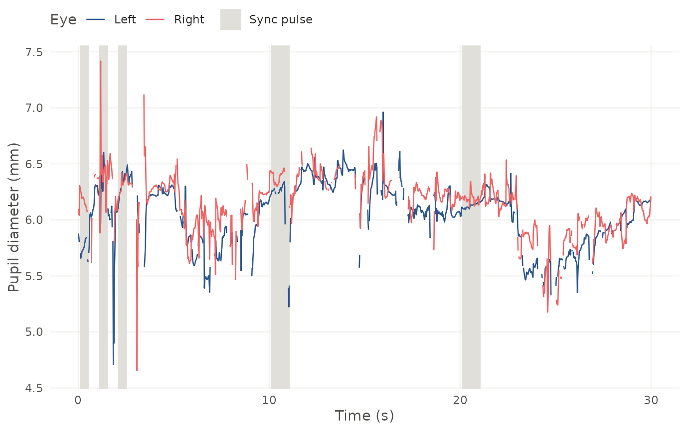
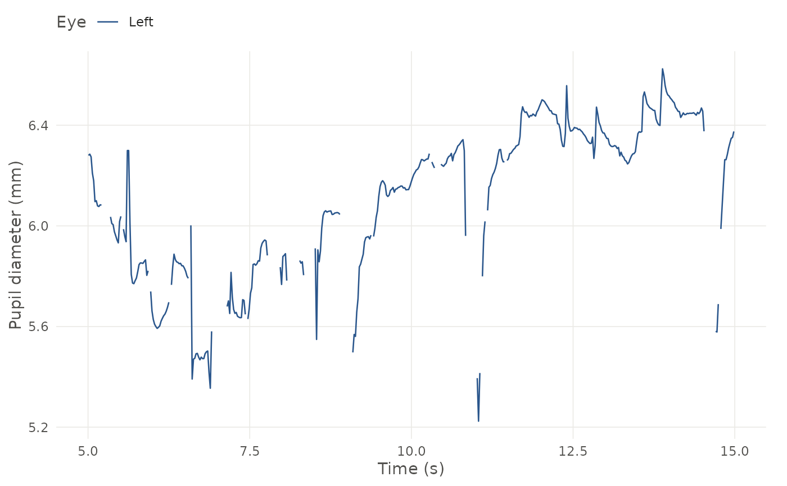
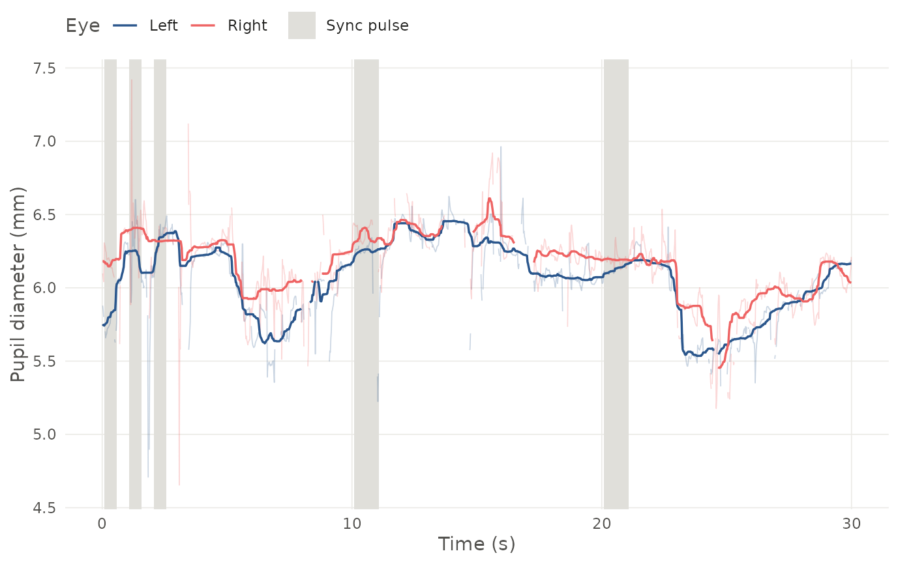
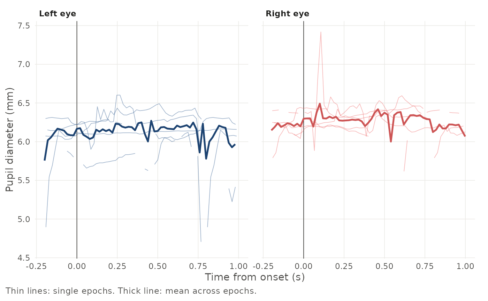

Draws pupil diameter for each eye over time, with sync port pulses as
shaded areas. With several recordings in x, each gets its own panel,
with its own time axis.
Arguments
- x
Gaze data from
read_g3_gaze()org3_epochs(), or ag3_recordingfromread_g3().- events
Optional event data from
read_g3_events(). Sync port pulses are drawn as shaded areas. Taken fromxifxis ag3_recording. Not used for epochs.- eyes
Which eyes to plot.
- from, to
Time window in seconds. Defaults to all the data. For epochs, the window is in seconds from the onset.
- direction
Sync port direction to show; see
g3_syncport().- smooth
Width in seconds of a running median drawn over the raw trace, or
NULL(the default) for none. Missing samples are ignored, and the line is left out where more than half of the window is missing. For epochs, each epoch is smoothed before the mean is taken. Only the plot is smoothed.- ...
Passed to
plot_g3_pupil().
Value
A ggplot object. The plot() method for recordings from
read_g3() draws this plot and returns the recording invisibly.
Details
If x comes from g3_epochs(), the time axis is the time from the onset
instead. Each eye gets its own panel, with a thin line for every epoch and
a thick line for the mean across epochs.
The eye colours and the theme are described in theme_g3().
Examples
rec <- read_g3(g3_example())
plot_g3_pupil(rec, direction = "out")

plot_g3_pupil(rec$gaze, eyes = "left", from = 5, to = 15)

plot_g3_pupil(rec, direction = "out", smooth = 1)

epochs <- g3_epochs(rec$gaze, rec$events, before = 0.2, after = 1, direction = "out")
plot_g3_pupil(epochs)
